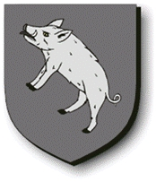

Antavla
15968861 Herlufsdatter Grubbe af Saerslev

Far:
Herluf Jacobsen Grubbe af Saerslev (1270? - >1316)
Född:
Saerslev, Själland, Danmark.
Barn med
15968860 Stig Pedersson Hak af Riis (<1300 - 1351)
Barn:
Niels Stigesen Hak (af Riis) (<1335 - 1380?)
Personhistoria
Årtal
Ålder
Händelse
1270?
Fadern
63875274 Herluf Jacobsen Grubbe af Saerslev
föds omkring 1270 Saerslev, Själland, Danmark
<1300
Partnern
15968860 Stig Pedersson Hak af Riis
föds före 1300 Skåne, Sverige
>1316
Fadern
63875274 Herluf Jacobsen Grubbe af Saerslev
dör efter 1316
<1335
Sonen
7984430 Niels Stigesen Hak (af Riis)
föds före 1335 Riis, Holbaeck, Danmark
1350?
Barnbarnet
3992215 Kristine Nilsdotter Ulfeldt (Hak)
föds omkring 1350 Riis, Ordrup, Själland, Danmark
1351
Partnern
15968860 Stig Pedersson Hak af Riis
dör 1351 Riis, Ordrup, Själland, Danmark
1380?
Sonen
7984430 Niels Stigesen Hak (af Riis)
dör omkring 1380
>1380
Barnbarnet
3992215 Kristine Nilsdotter Ulfeldt (Hak)
dör efter 1380 Terlöse, Danmark